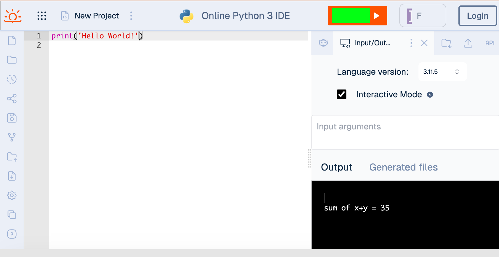
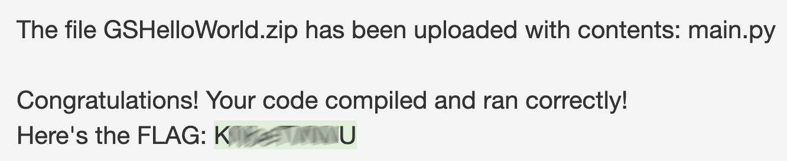
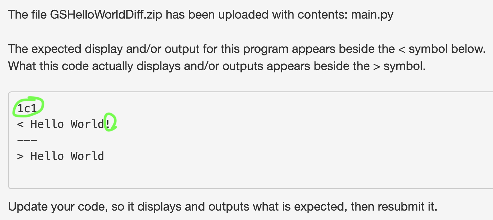
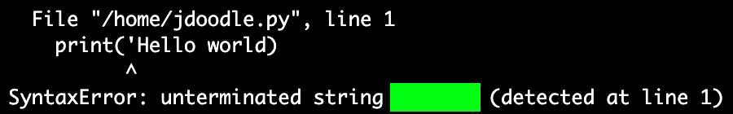

Required Resources
Read
- Chapter 1 in CS 161P: Computer Science 1 Using Python by Jim Bailey (in Course Resources section)
- Chapter 1 in How to Think Like a Computer Scientist
Then attempt the challenges below.
Try IDEs and Choose One
An IDE is an integrated development environment, which allows you to edit code, compile it, debug it, and run it. Some good choices include PyCharm, VS Code, and JDoodle. While JDoodle is a good IDE to start with as a new programmer, PyCharm and VS Code are IDEs you're more likely to see used professionally.
Watch this video to see how to use JDoodle.
The first program people generally write when learning a new language is Hello World. It gives them a chance to see if they can get the coding environment to work and produce simple output. You'll find Hello World on page 7 of the CS 161P readings for this week.
Flag GSJDoodle (5 pts)
For JDoodle, what button do you need to click to run the code? The flag is under the green box.

NOTE: This flag replaces GSReplit, which had the answer Run. The answer for GSDoodle is Execute.
Watch Mari Good's video, which shows how to use the PyCharm IDE to enter and run Hello World.
Try the PyCharm IDE by entering and executing the Hello Word code in it. PyCharm is a professional IDE developed by JetBrains that is available for Linux, Mac, and Windows. There is a free educational license available for all the JetBrains software. PyCharm also is available in the classroom and in the Computer Lab. Below are some resources to help you learn more about it and to get it installed on your home system, if you wish.
- Educational License Information ← Go to this page, click the Apply now button, then fill out and submit the form using your Lane email address.
- Download Community Version of PyCharm
Flag GSPyCharm (5 pts)
What does PyCharm report when Hello World executes? The flag is under the green box.

PyCharm sets up an entire project with many extra files that aren't strictly necessary to run your program. You'll submit programs you create in this class to code checkers, which run on a server and use the command line to run your code. You'll just need to submit the source code files, which end in py. This video shows how to save just the main.py file you need for the Hello World program, which you'll put in a folder, zip, and submit.
On a Windows computer, you can put your main.py file in a folder, right click the folder, choose Send to, and then choose Compressed (zipped) folder. Here's a video showing the process.
On a Mac, you can right click (two finger press) and choose Compress <folderName>, where <folderName> is the name of your folder.
Flag GSHelloWorld (5 pts)
Submit your zipped folder containing main.py to this code checker to get the flag. Read the text below for help understanding the feedback you receive.
Code Checker Feedback
Ideally, you'll get a message like this, which contains the flag you need to enter for the leaderboard and to get class points in Canvas.

More Work Needed
If your output doesn't match what's expected for this flag, you might get something like this.

The 1c1 above indicates the code checker found a discrepancy between what appears on line 1 of the output for the code submitted and on line 1 of the output for the solution code. The line which begins with < is line 1 of the solution code output. The line which begins with > is line 1 of the code submitted's output. Notice that the code submitted is missing the exclamation mark. To fix this, you'd need to add the exclamation mark to the print statement in main.py and resubmit the code to the checker.
When User Input is Required
The code checkers require the output from your programs to match the expected output exactly. You will be provided with example runs you need to match, including blank lines.
When the code checkers report the output from your program, they do not display the input, which can look a bit confusing. Above the output, the code checkers report what input was used. Watch this video to see how to effectively work with what the code checker tells you when the program requires data to be input by the user.
Show File Extensions
Many of the code checkers require you to name your Python file main.py. Windows machines, by default, do NOT show file extensions. If you haven't made file extensions visible, then main.py will show as main in File Explorer. This can cause students to inadvertently rename their file main.py.py.
To keep this from happening to you, watch the video below for your Windows version, and set your computer to show file extensions.
Windows 10 or Earlier
Windows 11
Work Flow and File Management
You'll capture many flags in this course like the one you captured above for GSHelloWorld. Canvas will NOT remember the flags you enter, and you may want to enter them again in the future. Also, many of the files you'll create will be called main.py, and you may want to refer back to code your wrote for an earlier flag. I recommend adopting the workflow and file management practices demonstrated in this video.
Use Comments
Comments are notes to yourself and other humans who might need to read and update your code. At minimum, you should have one at the top of your program stating what it does, your name, and the date it was last modified. You should put them within your code to help clarify what different sections do, like at the beginning of each function, and also where code might be challenging to understand. We'll learn about functions later.
Flag GSCommentSL (5 pts)
Which delimiter begins a single line comment, but not a multiline comment?
Flag GSCommentML (5 pts)
Which delimiter is used for multiline comments?
Investigate Error Messages
Knowing how to use different IDEs can be helpful. If one stops working for you, you have another one you can use. If you're working with a team, it can be helpful to use the same IDE. Sometimes IDEs will identify and describe error and warning messages differently. These messages can be hard to understand, in which case reading messages from multiple compilers can help you discern what they're trying to tell you.
Keep in mind that compilers (and IDEs) are just programs written by people. Communication is a two way street. If you don't understand an error message, it's not all on you. Perhaps the person could have composed a more understandable message, and maybe you'll find that's the case with a different compiler. Whenever you do figure out what's wrong with your code, try to consider the error and warning messages again to see if what they were trying to say makes more sense. As you reconsider messages, practice coding, and learn programming terminology, understanding compiler warnings and errors will get easier.
Flag GSQuoteMiss (5 pts)
Try altering Hello World to contain an error, so it generates an error message. Specifically, remove the second quote from the string getting printed. You'll find that PyCharm (on a Mac) and JDoodle both generate similar error messages. The flag is under the green box and is the same for both IDEs.


Notice as well that both error messages indicate the issue occurred on line 1.
PyCharm (on a PC) produces a different, but similar error message. Again, the word under the green flag is the same, but the message says EOL (which means end of line) while scanning string. The two compilers above report the string is unterminated. They're both having an issue at the end of the line, but say this in a slightly different way.

Try making additional changes to the code to see what kinds of error messages get generated. Do they make sense? If not, ask me about them. They'll likely inspire some interesting conversations and bonus learning!
Debug
Of course, we don't normally break code on purpose. When we write code, we try to remove errors and get it to run properly. This is called debugging.
The code below has one or more errors. See if you can find them. You can use an IDE of your choice, or you can even use the code checking tool which uses the python3 compiler on Linux. In general, it's good practice to focus on just the first error reported, fix it, then rerun the program, and once again, focus on the first error message. This is because the interpreter can get very lost very quickly after the first error. Fixing the first error often fixes other errors (which often aren't really errors).
The code below adds a feature, asking the person for their name and then displaying it in a greeting. It uses input to retrieve a string from the user, which it stores in a variable called name. It has one or more errors. See if you can find them.
name = input("What is your name? ")
print("Hi, " + Name + "!")Flag GSDebug1 (10 pts)
After you've debugged the code and gotten it to run, put it in a folder, zip the folder, and submit the zipped folder to this the code code checker to get the flag.
The code below asks a user for a number, converts the string entered to an integer, multiplies it by two, and displays the result. It has one or more errors. See if you can find them.
value = integer(input("Enter an integer between 1 and 10: "))
output(value * 2)Flag GSDebug2 (10 pts)
After you've debugged the code and gotten it to run, submit your zipped folder containing main.py to this code checker to get the flag.
The code below adds two numbers and displays the sum. It has one or more errors. See if you can find them.
number1 = input(Enter an integer between 1 and 10: )
number1 = input(Enter a second integer between 1 and 10: )
print(number1 + number2)Flag GSDebug3 (10 pts)
After you've debugged the code and gotten it to run, submit your zipped folder containing main.py to this code checker to get the flag.
Write a Program to Get and Display Two Values
Write a program which asks the user for two inputs. The first input is their favorite color. The second input is their favorite number. Output in a complete sentence both of their answers. Use two variables, one for the color and one for the number. Here is an example run.
What is your favorite number? 42
Your favorite color is purple, and your favorite number is 42.
Flag GSGetDisp2Vals (15 pts)
After your code is working, submit your zipped folder containing main.py to this code checker to get the flag.